Total downtime events
4,200
+4.1% YoY
Total downtime hours
4,330.4
+2.8% YoY
Total repair cost
€2.05M
+3.6% YoY
Units lost
387,929
+1.9% YoY
Avg downtime / event
1.03 hrs
−0.6% YoY
Avg repair cost
€488.4
+1.2% YoY
Pending events
243
Needs attention
Unplanned downtime %
72.5%
Target ≤ 60%
Monthly downtime trend
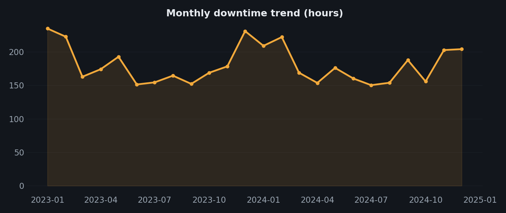
Planned vs unplanned
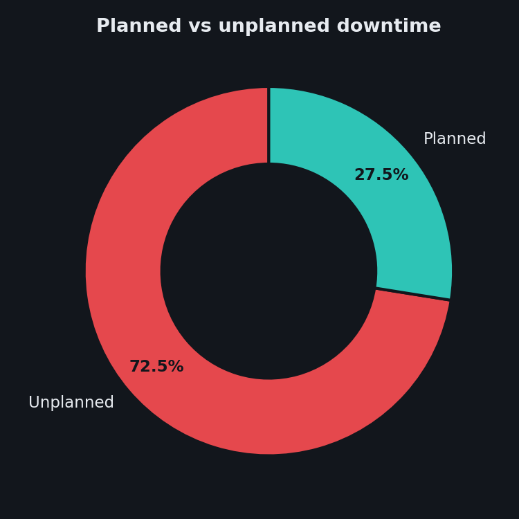
Monthly repair cost trend
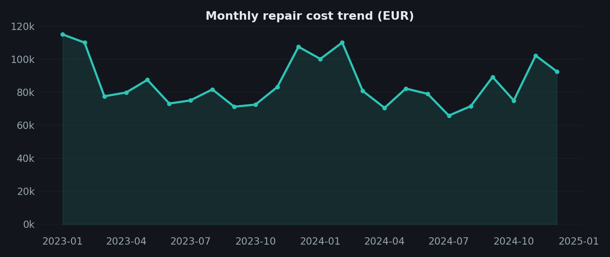
Downtime by shift
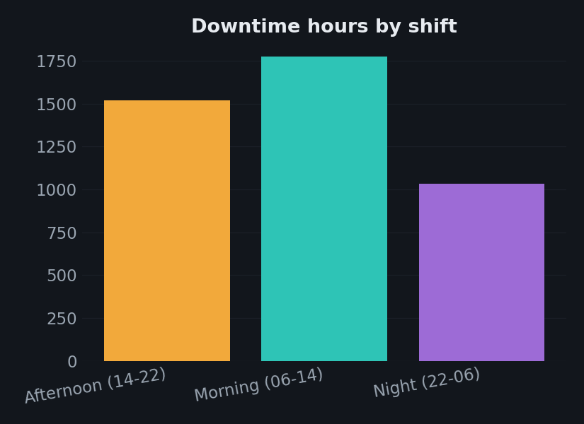
Downtime hours by plant
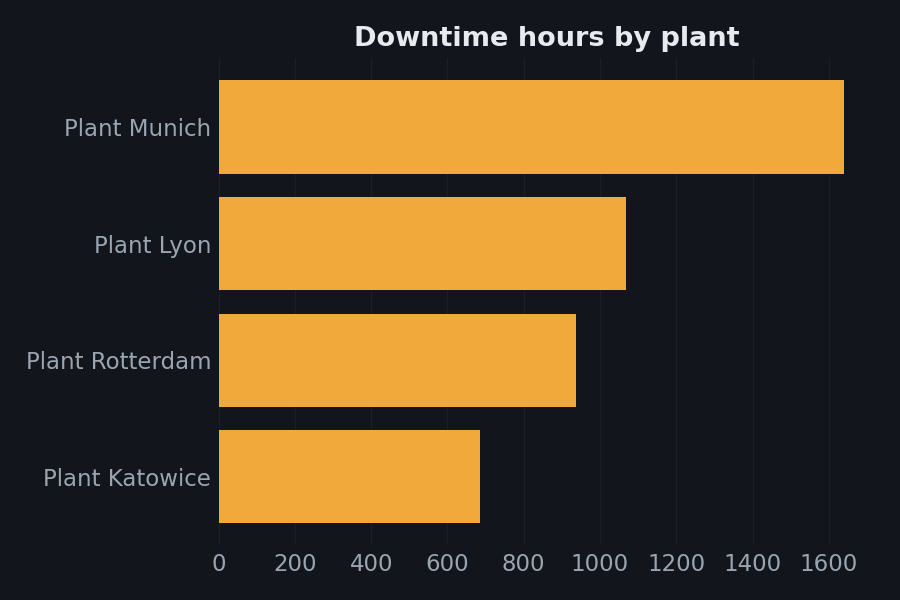
Downtime hours by machine (top 10)
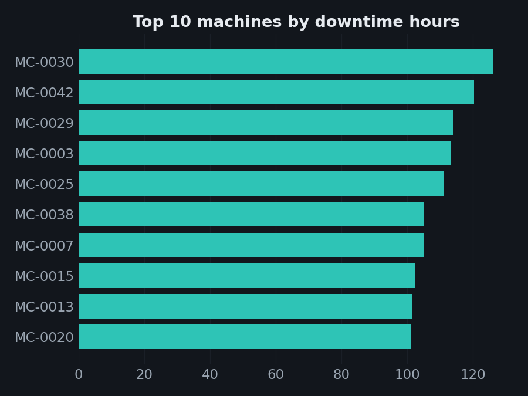
Downtime hours by production line
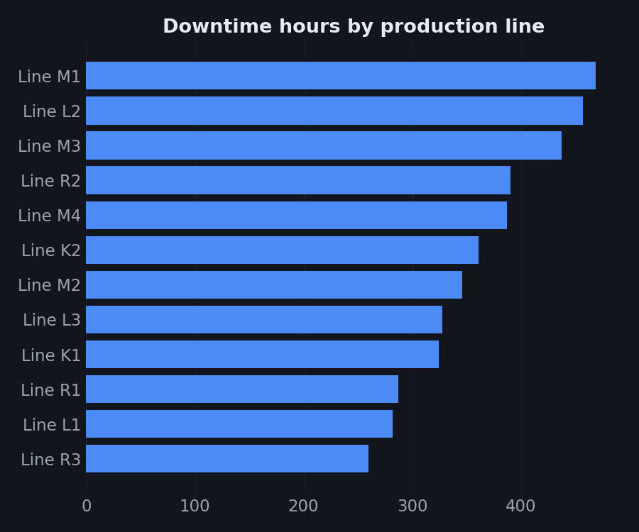
Downtime hours by reason (top 10)
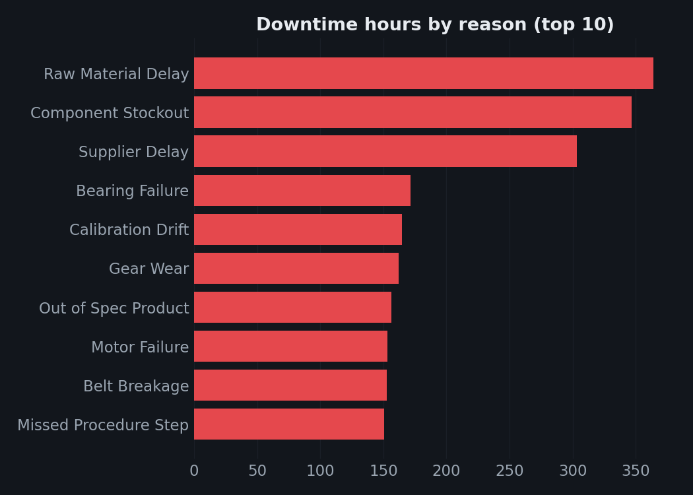
Downtime hours by machine type
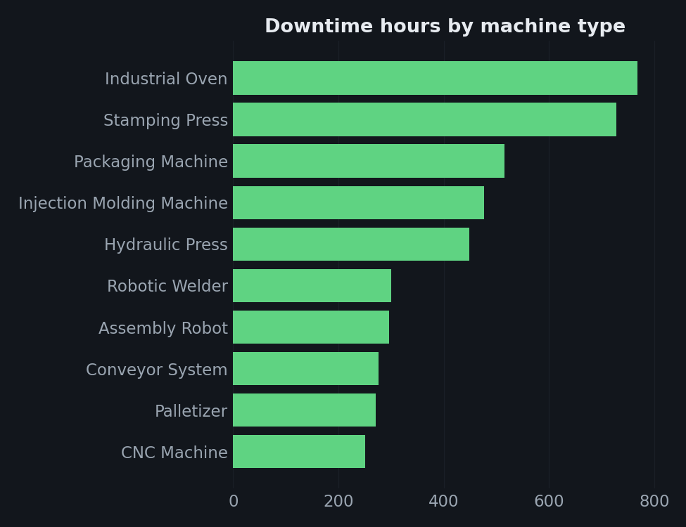
Repair cost by machine (top 15)
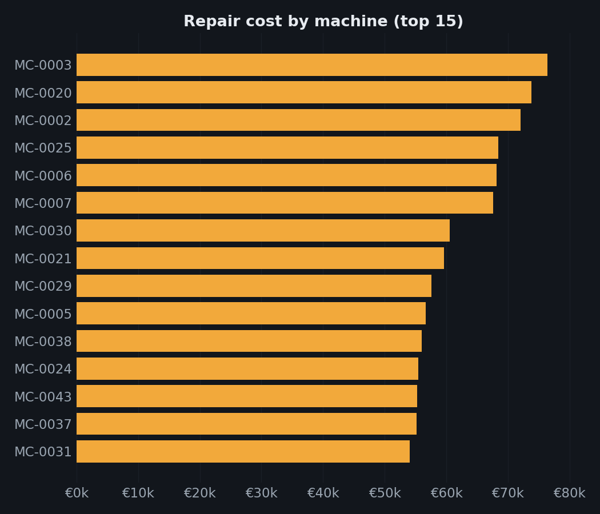
Top 10 most expensive machines
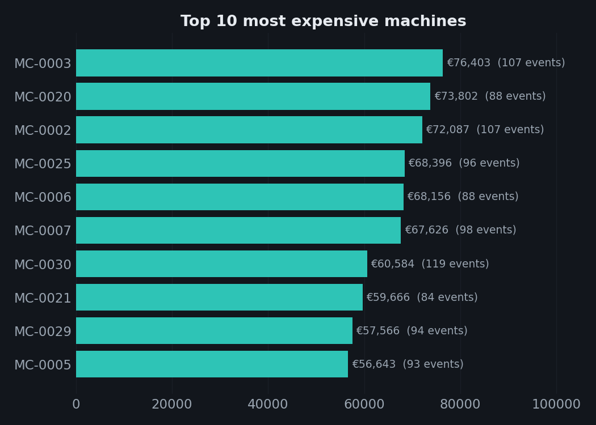
Production units lost by plant
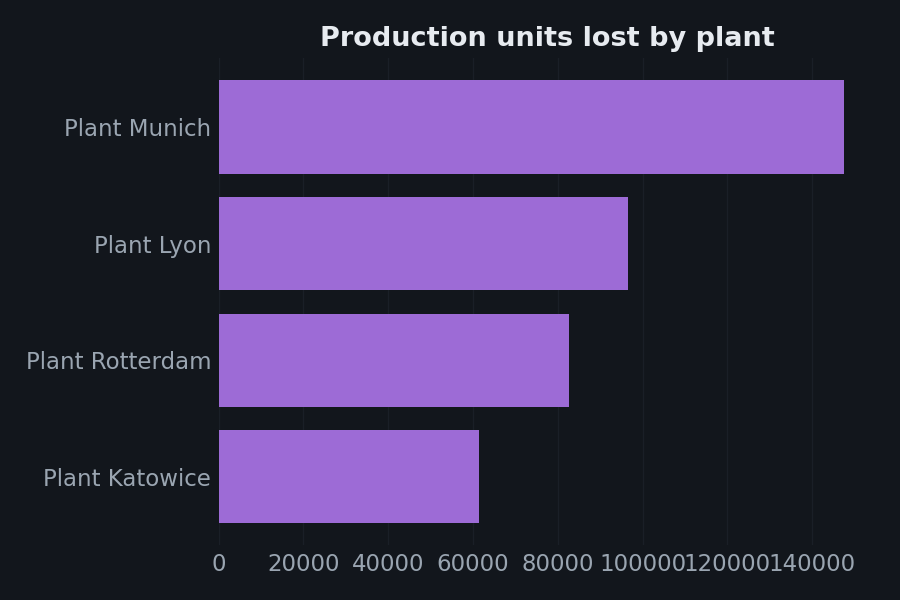
Pareto analysis — downtime reasons
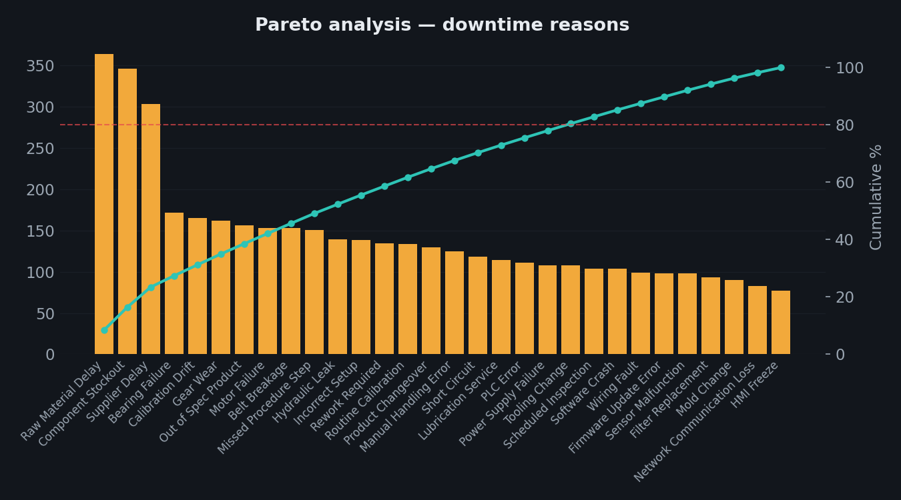
Downtime heatmap — day of week vs shift
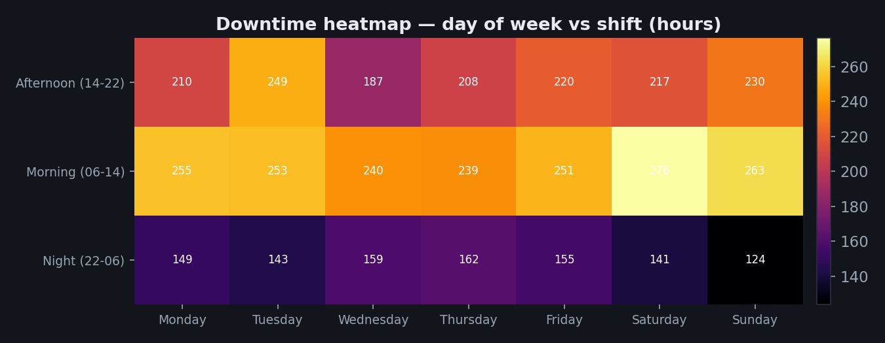
Repair cost waterfall by category
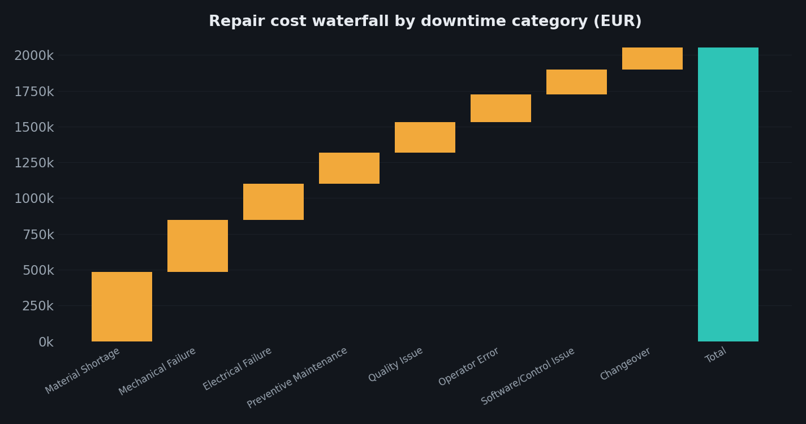
Downtime hours vs repair cost (scatter)
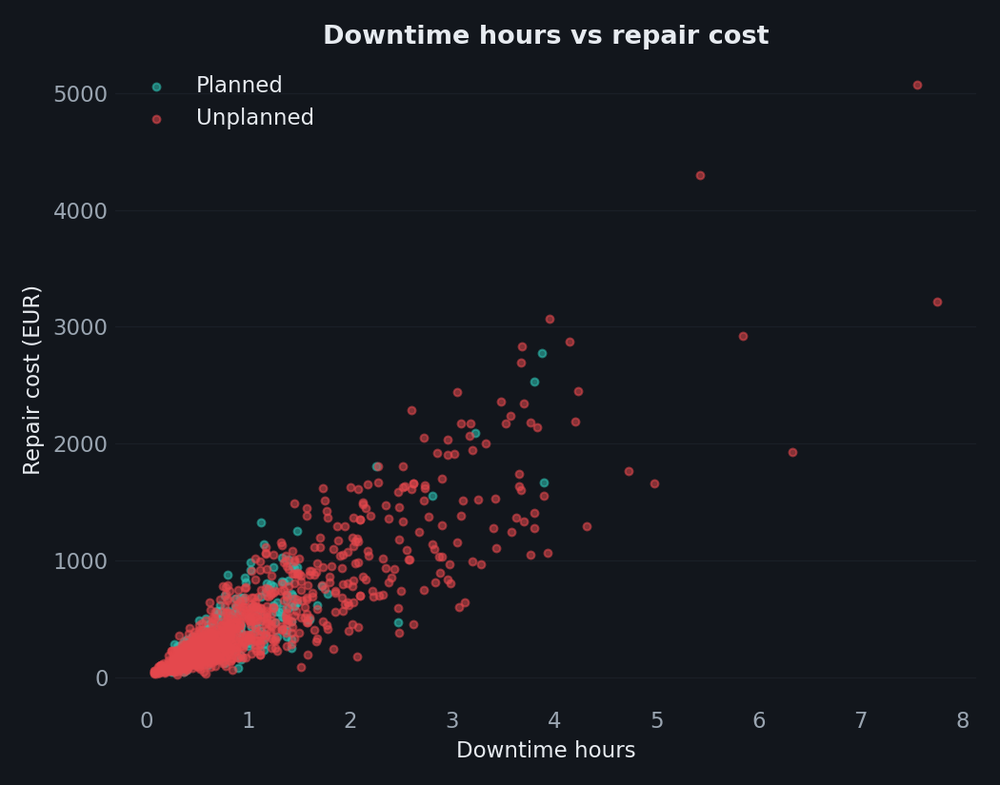
Treemap — downtime hours by category
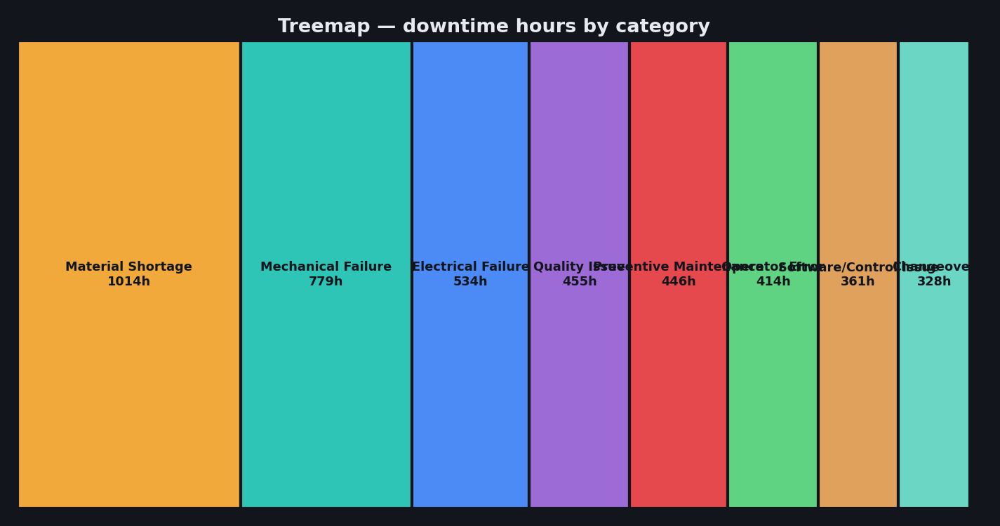